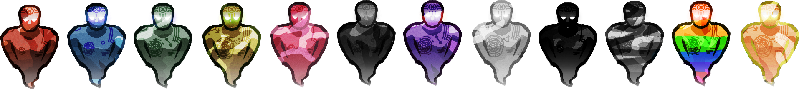
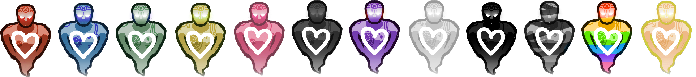
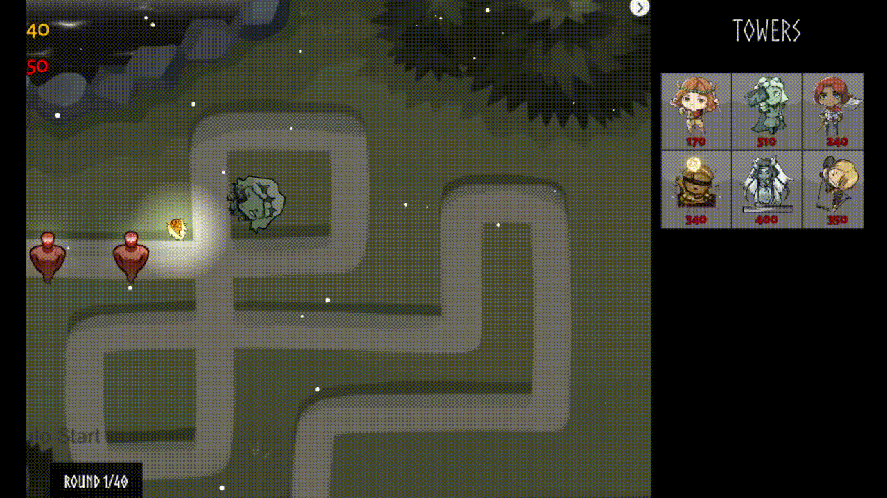
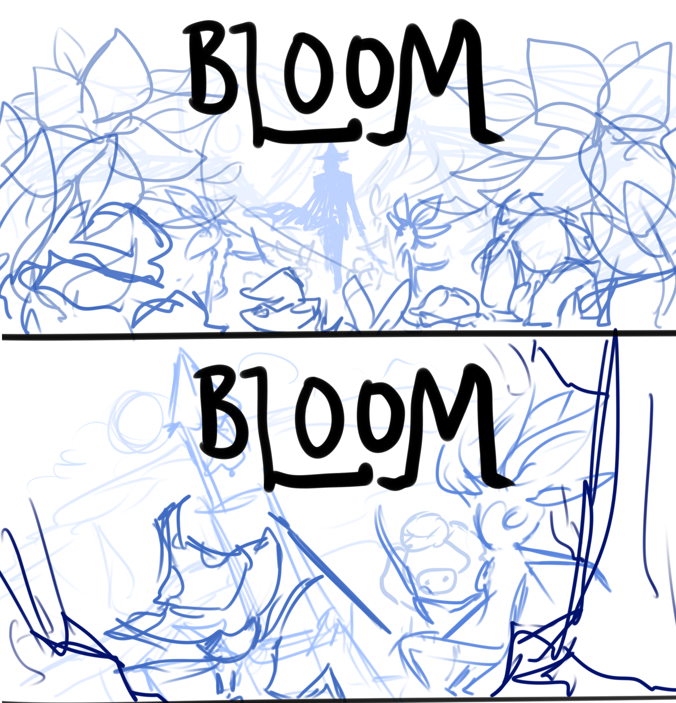
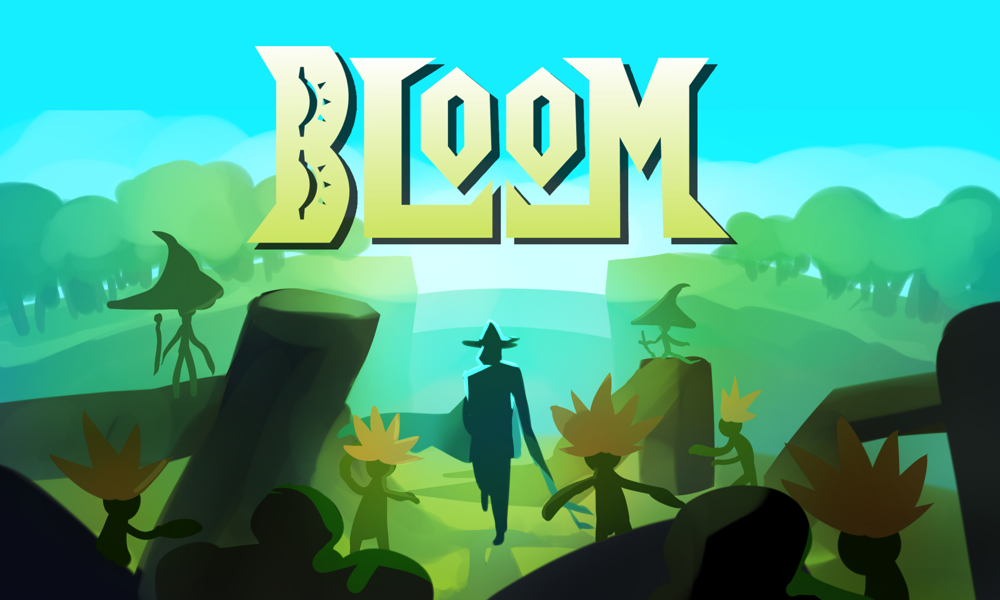

Studio-wide & Project Tower Meetings
Thanksgiving sprint! Our meeting on 11/21 was held in-person at 1695 BBB as per usual, but our meeting on Sunday 11/28 was remote due to the holiday. There's not much to say here that differs from the normal routine. Attendance at in-person events has been a bit spotty lately, but remote attendance has remained consistent. This is a topic for the next leads to discuss: whether or not to continue having in-person studio meetings. Maybe, in the future, the studio could alternate between in-person and remote meetings. In either case, there are several benefits to in-person meetings, but they are significantly more difficult to maintain engagement in.
Project Tower IC Work
I've done a bit of programming work for Project Tower this week. In particular, I've implemented camoflauged and regenerating "regen" enemies, and have implemented into the first 40 rounds of the game. It wasn't difficult - just a bit tedious. I created placeholder sprites for the types of enemies, which can be seen below. They are indeed meant to be placeholders, but they may remain in the game if the actual sprites for these aren't submitted soon.
 Can you guess which ones are which? 🙂
I had to do a bit of testing to get these guys to function properly. The camoflauge functionality had already been implemented, so it was just a matter of creating prefab variants with the "isHidden" boolean ticked. The regeneration enemies were a little bit more involved, but not much more complicated than the camoflauged ones. Here's the quick script I threw together to represent their healing:
public class EnemyRegen : MonoBehaviour {
[Tooltip("Whether regeneration will occur")]
public bool enableRegeneration = true;
[Tooltip("The rate at which the enemy recovers health")]
[SerializeField] private float regenRate = 1.5f;
[Tooltip("The amount of health the enemy heals")]
[SerializeField] private int regenAmount = 1;
private WSoft.Combat.Health health;
private void Start() {
health = GetComponent();
StartCoroutine(HealthRegeneration());
}
private IEnumerator HealthRegeneration() {
while (true) {
yield return new WaitForSeconds(regenRate);
if (enableRegeneration && health.Current < health.max) {
health.Heal(regenAmount);
}
}
}
}
There is a slight weakness to this approach. Currently, a script I helped implement a while back (ChangeEnemyOnHit.cs) iterates through a list of enemy "layers" whenever the enemy health goes up or down. If the enemy's current-health attribute matches a certain layer, than the enemy prefab takes on the properties of that layer (speed, sprite, etc). Through that mechanism, when an enemy "regenerates", it will gain a layer. The problem, however, is that ChangeEnemyOnHit.cs stops iterating through the list of enemy "layers" at the enemy's max-health attribute. Bulk enemies, which break into multiple subenemies, do not pass on their max-health attribute - instead, new independent prefabs are spawned. Thus, when a ceramic ghost with a maxhealth of (for example) 40 splits into two rainbow ghosts, the rainbow ghosts now have a maxhealth of 20 instead. This means that the current system will not regenerate an enemy back into its "bulk" state.
That was a pretty long-winded explanation for something that will likely be inconsequential. The game is already a bit too challenging at the moment, so maybe this is exactly the type of "balancing-down" that we needed. In WolverineSoft, we like to be optimistic!
A smaller task I did for Project Tower this sprint was implement an explosion tower VFX. Now, a particle system spawns (and subsequently self destructs) at whatever location a bomb projectile was thrown towards.
Other than this, I also made very minor modifications to the UI (not pictured in the .gif above) before Andrew took over. Among these included modifying some updated sprites so that they would slice cleanly and making some minor layout changes to the Tower Select screen. Additionally, I reworked a really strange system wherein the "sell" button for each tower was instantiated dynamically. There are similarly strange systems in the rest of the Tower Actions screen that I'll be modifying in the next 2 weeks of Gold - and along the way, I'll be doing some aesthetic polish!
Project Bloom IC Work
I've also had the pleasure of doing a bit of independent work on Project Bloom this past sprint. Among these small tasks included reworking the item drop system, which controlled the frequency and types of items that spawned on enemy death and from treasure chests. Much of this involved simply reworking a script that was borrowed from Circuitry, our Fall 2020 project. Isaac later took over and added rigidbodies to item drops; thanks to his hard work, the system works beautifully!
Perhaps more significantly, I have begun working on drafts for Bloom's new cover art. I feel like Bloom is a visually stunning game (kudos to the art teams from both iterations!), so I wanted to do justice to that. I hopped into a voice call with another lead and drafted these two potential cover art candidates:
It may be a bit difficult to tell what's going on in these two sketches (to be honest, upon pulling them up again just now, I had to take at least 10 seconds to re-process the images). At the top, we see a composition more inspired by titles like Doom Eternal. The player character (just a silhouette in this case, as we have no official design) is at the center of the piece as overgrown enemies swarm them. At the bottom, we see a more dynamic composition; the bell tower from level 3 stands at the very back as enemies rush up the hill towards the "camera."
My goal is to iterate on both of these ideas so that we can better compare them. I did finish blocking out the colors of the top composition, but be warned - it's very messy. If this is the one we choose, I fully intend on spending a TON of time iterating on and perfecting it.
As per usual, I expect cover arts to be quite the journey. The plan is currently that I do them for both projects. Regardless, I think it'll be a great way to close my time with WolverineSoft Studio. I can tell that it'll be a challenge, although by the next (final!) devblog, I'll already be finished. Look forward to that! 😄
Oh, mysterious person reading my devblog - thanks for sticking around for another sprint! This upcoming sprint is going to be incredibly busy and art-filled for me, but I'm so excited to finish these projects off strong. Thank you for all your support. I'll see you in 2 weeks for my final studio devblog... ever!